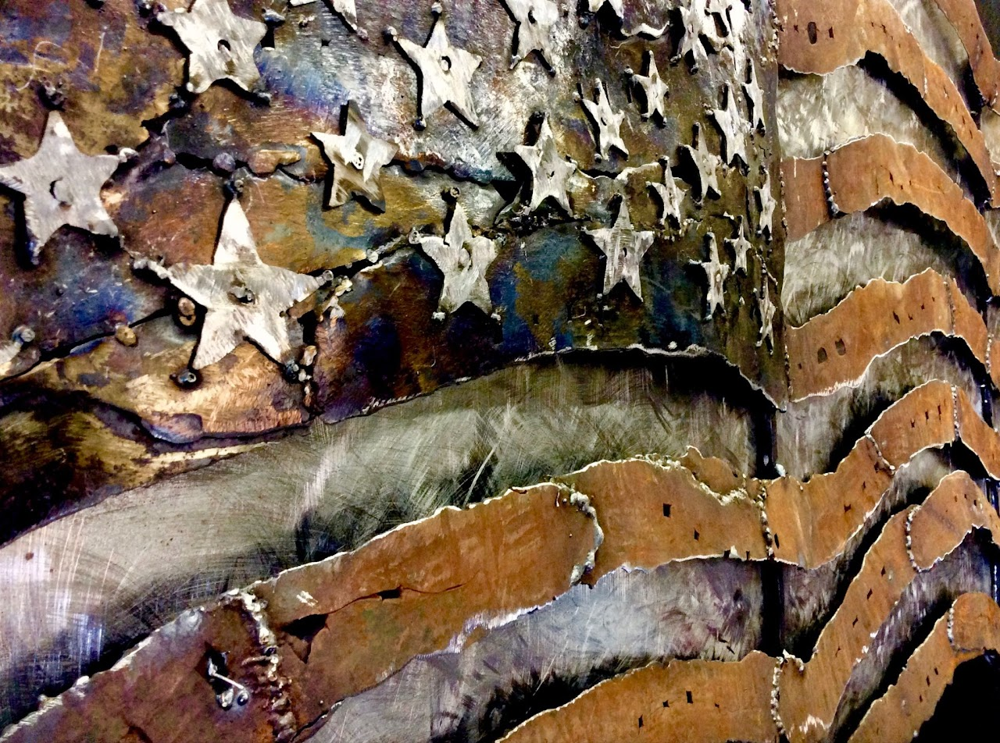
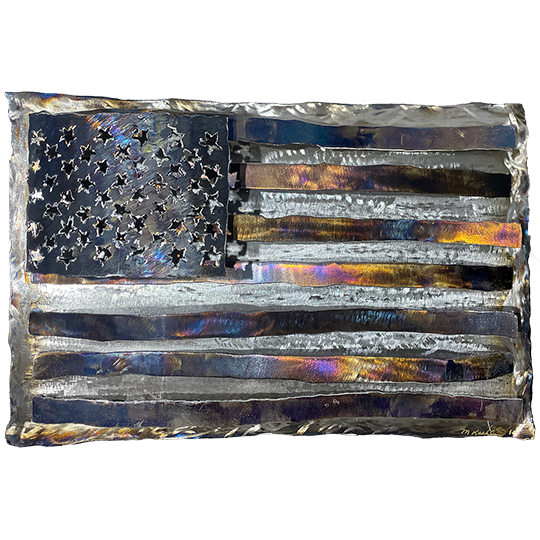
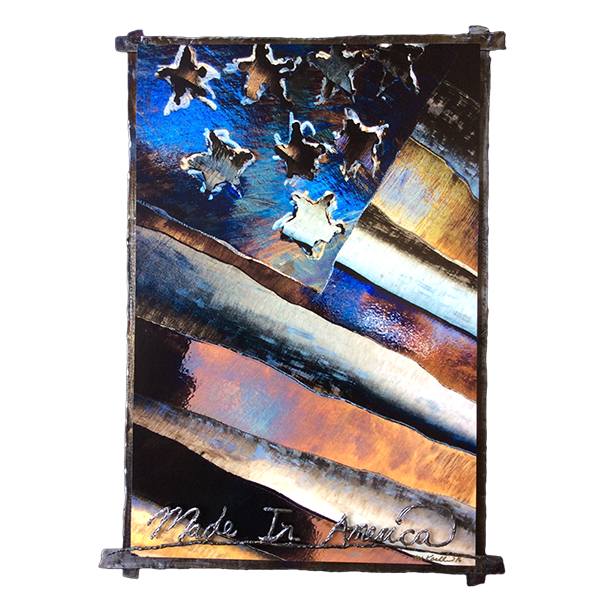
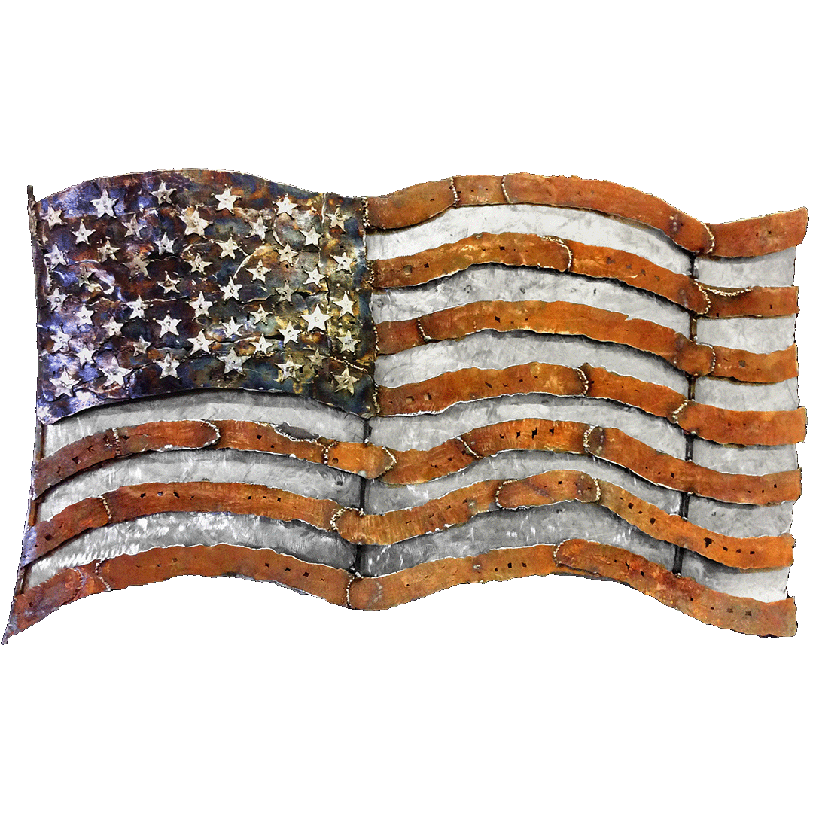
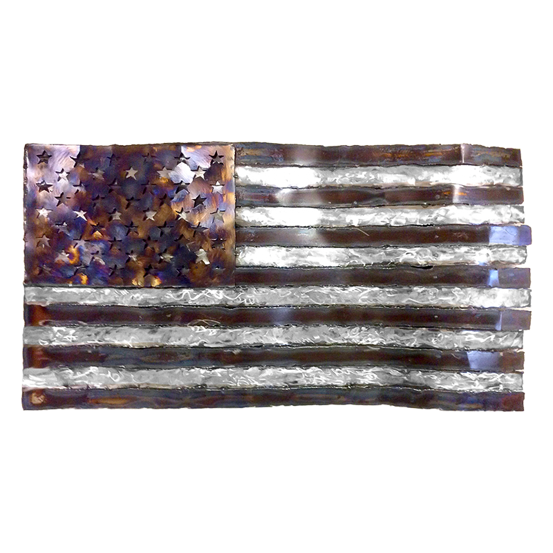
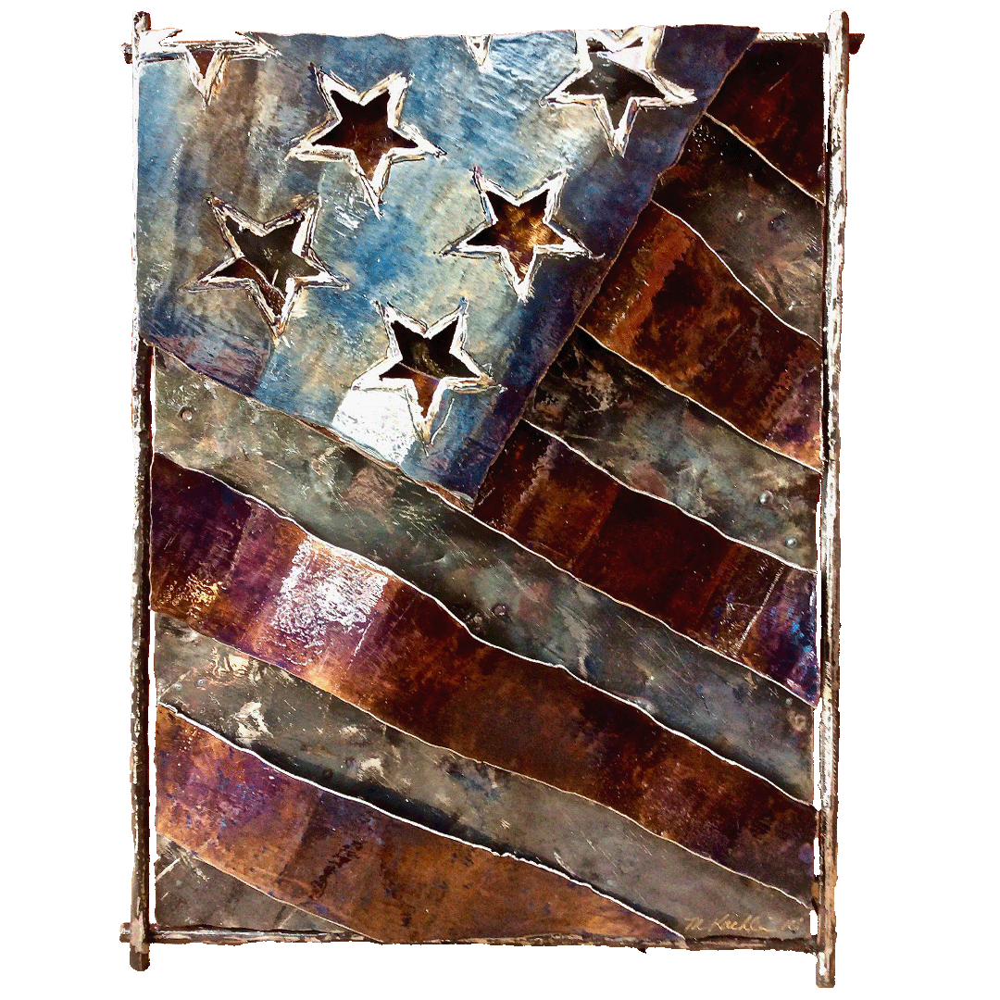

2016 - 2018
Around 2016, I noticed the American flag being increasingly co-opted for political expression, and I was frustrated by how its original meaning seemed to shift and fragment. What was once a powerful symbol of national unity began to represent political division, and I struggled to reconcile this transformation with my own sense of pride in the flag. My Flag Series, Made in America emerged as a way to better understand both the physical attributes of the flag and the internal dialogue I was having about the state of our country at that time. Through this series, I explored the flag’s symbolism, its power to unify and divide, and how it could be reinterpreted in the context of contemporary issues. The creation of each art piece became a reflection of my ongoing search for meaning in a rapidly changing national landscape.


2016 (19"x15")
NFS

2016 (Close Up Photograph Of #1)
Sold

2018 (30"x48"x3")
30+ Smithed Horseshoes And Heat Colored Steel
Pricing upon request

2016 (30"x48"x2")
Heat Colored And Rusted Steel
Sold

2017 (24"x32"x3")
Heat Colored Steel
Sold